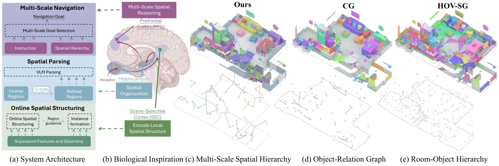
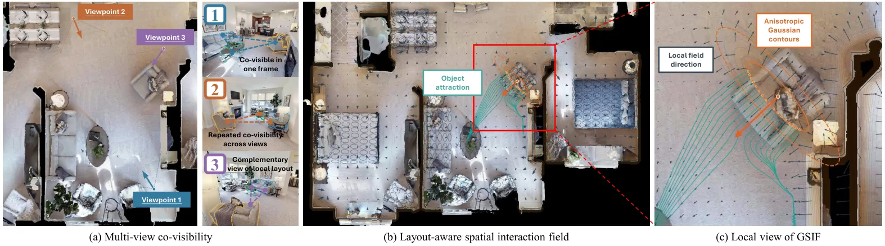
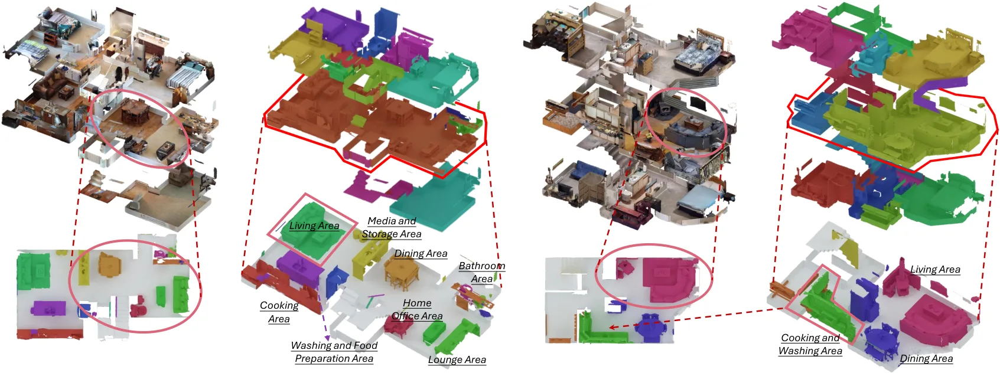
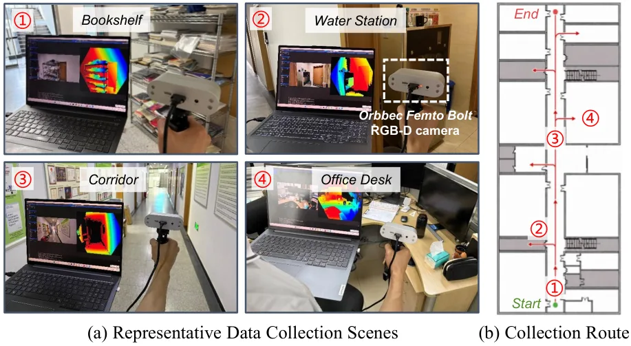

EMS-Nav：以区域为组织单元的具身多尺度导航
EMS-Nav: Embodied Multi-Scale Navigation
这篇的论点是“区域既是理解的单位，也是计算的单位”：在线建图用粗区域约束实例关联与合并，定期解析把区域细分成功能空间并用 S2R 学习合并，再由 VLM 命名并组合成层级，最后按指令在不同尺度上选证据。它在 HM3D 的 36 个场景、18,628 条指令上把 SR@1 做到 44.51%（最强基线 DualMap 约 35.1%），逐帧建图时间 199 ms（4k 帧）比 CG 少 81.7%。真实部署在 RTX 4060 Ti 上跑出 61.7% 单次成功率、约 8 GiB 显存。
HM3D SR@1
Per-frame mapping time at 4k
Real-world single-attempt SR
作者、单位与技术谱系 · Research context
作者与单位
研究脉络
- HOV-SG方法基座与基线关系：房间/楼层式的层级组织被作为对照基线，S2R 的区域合并目标也是“把对象组合成房间级功能空间”这一问题的延伸。[论文 §4.6]
- ConceptGraphs / DualMap上游基线关系：一个是对象关系图（CG），一个是双表示建图（DualMap），两者分别在语义组织与效率上作为主要对照。[论文 §4.1、§4.6]
- 本篇推进：区域作为建图与检索的共同原子本篇推进关系：把 HOV-SG 的“房间层级”换成从观测中长出来的功能区域，并让区域反过来约束在线建图。[论文 §3.1、§3.2.3、§4.6]
合作网络
- 清华校内共同署名Tsinghua University 多个院系 → School of Software, Tsinghua University关系：共同署名[论文首页作者单位]
- EMS-Nav ↔ HOV-SG / DualMapEMS-Nav → HOV-SG、DualMap关系：技术依赖与对照[论文 §4.1、§4.5、§4.6]
作者单位来自首页标注；HOV-SG/DualMap 的关系依据正文的对照与协议沿用描述，未推断师生关系。
方法本质拆解 · What actually changed
是不是微调？
只有 S2R 是训练的：用 1,513 个 ScanNet 场景的区域标注（大模型初标 + 人工检查）训 98 万对样本，权重在迁移到 HM3D 时保持固定，不做目标场景微调。感知侧 FastSAM、ESAM、MobileCLIP-S2 与语言侧 Qwen3-VL-8B-Thinking 都是现成模型，后者用 GGUF Q4_K_M + 视觉 Q8_0 量化，约 5.05 GiB。
有没有额外约束？
输入约束：需要已注册的 RGB-D、相机内参与已知位姿，属于“沿既有轨迹建图再导航”的设定。结构约束：粗区域由 DF Louvain 增量维护并只在 1 m 包围盒内提供候选；功能区域必须由 S2R 在诱导子图上合并；父区域必须由 VLM 判定空间与功能关系支持才创建。关系约束：三类证据（共观测、GSIF 几何、视觉语义）共同决定边，不允许把同帧所有超点直接归为一区。
推理/后端到底做了什么？
在线建图每帧做超点提取、候选选择、融合/插入、关系与区域更新；每隔固定帧数并行触发一次空间解析（细分 + S2R 合并 + VLM 命名与组合）。导航时先按指令在层级里选候选空间，再按需查节点/关系，必要时用 3D 高斯核算四类几何关系，最后把目标转成附近自由空间的端点。整个链路没有全局 BA 或位姿优化，位姿是给定输入。
方法本质是什么？
本质是把“区域”同时当作表示的原子和计算的边界：局部更新只碰相关区域，语义解释也只重算变化的区域与其父区域，于是算力随变化量而不是场景规模增长。它没有做的是精细物体重建与位姿估计，所以精度上让位于 HOV-SG 之类的方法，收益来自结构而非几何。
输入已注册 RGB-D 与语言指令，改变的是地图的组织单位（节点→区域→层级），动作是用 GSIF 关系与 S2R 合并构建功能区域并据指令选证据，直接效果是四类尺度目标 SR@1 提升 9.39 个百分点且逐帧建图时间下降 72–82%。

桥接价值Bridge
桥接价值
EMS-Nav 解决的是“同一张地图要同时服务物体级和区域级指令”这个工程矛盾：表示越丰富越准，但端上算力撑不住。它把区域当原子，使建图、空间理解和目标选择共享同一套局部结构，于是算力随区域数而不是节点数增长。对做具身导航或巡检的团队来说，这篇提供了一条可落地的中间路线：不追求最强的实例重建，而是追“结构对、算力省”。
方法与模块Method
方法摘要
在线部分：RGB-D 超点带几何与视觉特征投影到世界系，节点可是一条历史超点或超点聚合；关系图由 GSIF 引导——各向异性高斯核近似水平形状，查询方向时源物体排斥、其他物体吸引、墙体等结构排斥共同决定候选连接，再用 GSIF 代价挑稀疏边；边权结合视觉相似、空间距离与跨帧支持。粗区域用 Dynamic Frontier Louvain 增量维护，并作为下一帧实例关联的候选集（1 m 包围盒内的区域成员），因此区域在建图早期就能参与约束。定期解析：对变化区域做一次 Louvain 细分，再由 S2R（节点 token = 256 维观测特征 + 中心 + 尺度 + 邻居上下文）判断两个候选区域是否应合并，Qwen3-VL 给区域命名并决定是否组合成父区域。导航侧按指令选尺度证据，需要时用 3D 高斯核预测 on/in/overlap/near 四类关系。
可迁移模块
第一个可迁移模块是“区域约束的候选集”：用 1 m 包围盒内区域成员限制实例比较，而不是全图检索，这在我们做大规模地图的增量关联时能直接降复杂度，且允许跨区域匹配（一个超点可选多个区域）。第二个是 S2R 的输入构造：节点自身特征加一层邻居聚合（相对位置 + GSIF 代价）再做双向注意力判断合并，这套“局部上下文 + 成对决策”的结构可以复用到我们的地图分段/子图合并。第三个是“按需关系查询”：不预先枚举所有关系，只在语义与属性无法区分候选时用 3D 高斯核算 on/in/overlap/near，这对实时性友好。

证据Evidence
关键证据与数字
HM3D val 的 36 个场景、47 条轨迹、26,647 帧、18,628 条 LangMap 指令上，EMS-Nav 的 SR@1/3/5 为 44.51%/61.56%/68.70%，比最强基线 DualMap 高 9.39/10.13/10.20 个百分点；区域与实例约束的 SR@1 为 39.32%/43.59%，分别领先 11.95/9.52 个百分点。建图效率：2k/3k/4k 帧下逐帧时间 176/189/199 ms，DualMap 421→713 ms、CG 877→1,090 ms，4k 时分别省 72.1% 与 81.7%；感知参数量约 218.3M（HOV-SG 的 mask/feature 分别 641.1M/986.1M）。S2R 区域合并 ARI 0.74 / B3 0.87，优于 MLP 的 0.61/0.73 与连通域 0.40/0.59。真实部署（RTX 4060 Ti、128 条指令、单次尝试）成功率 61.7%，显存约 8 GiB，峰值 5.19 FPS，层级解析 4.32 s/次、导航查询 3.97 s/次。
边界与下一步Limits & Next Step
边界与风险
作者承认三条：不支持帧间间隔过大的观测序列（实例关联与局部关系都靠连续观测累积）；端上仍要付出持续建图与周期解析的算力，更弱设备需要更轻的模型与自适应调度；区域语义依赖物体语义，语义错误会传导到功能解释，且 S2R 依赖 ESAM 特征，换前端不灵活。风险还有两处：实机评测的 128 条指令要求目标在查询前已被相机观测到，属于“已建图后导航”，不是探索式导航；实例重建精度（class-agnostic AP 13.36、semantic AP 7.63）低于 HOV-SG（18.23/10.53），说明它用精度换结构，换到需要精细物体几何的任务（抓取、装配）未必合适。
下一步实验
建议先做一次“同实例图、不同组织”的对照复现：固定我们自己的实例地图，比较扁平、房间层级、功能区域、功能区域+多尺度层级四种组织下的目标选择成功率，这正是原文 Table 9 的做法（13.42→20.78→41.63→44.51）。第二步测区域约束对增量关联的加速比：把候选集从全图改成“1 m 内区域成员”，记录匹配耗时与错误合并率。第三步把“按需关系查询”接到我们的地图上，比较预枚举全部 on/in 关系与按需计算两种策略的时延与显存。





